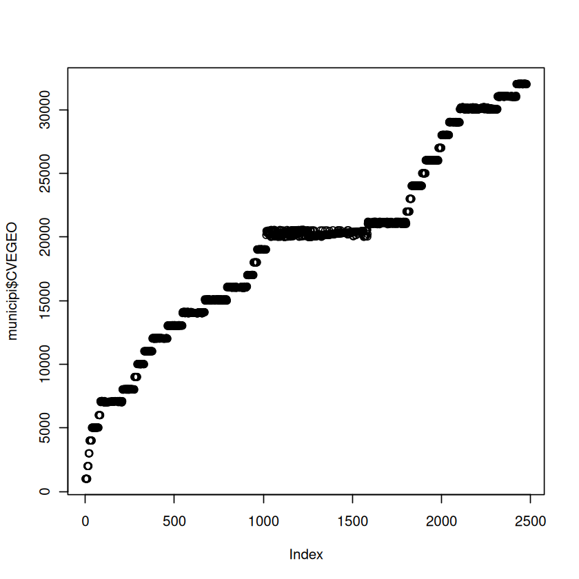
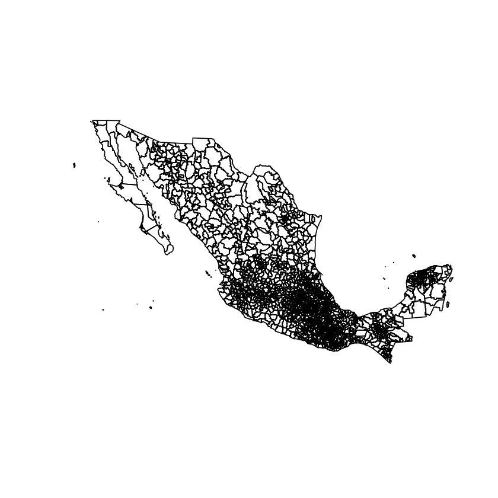
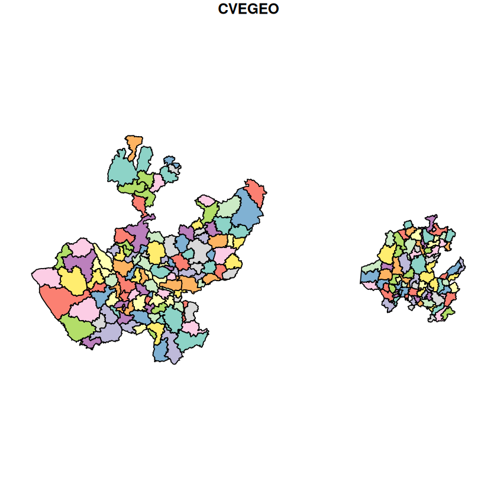
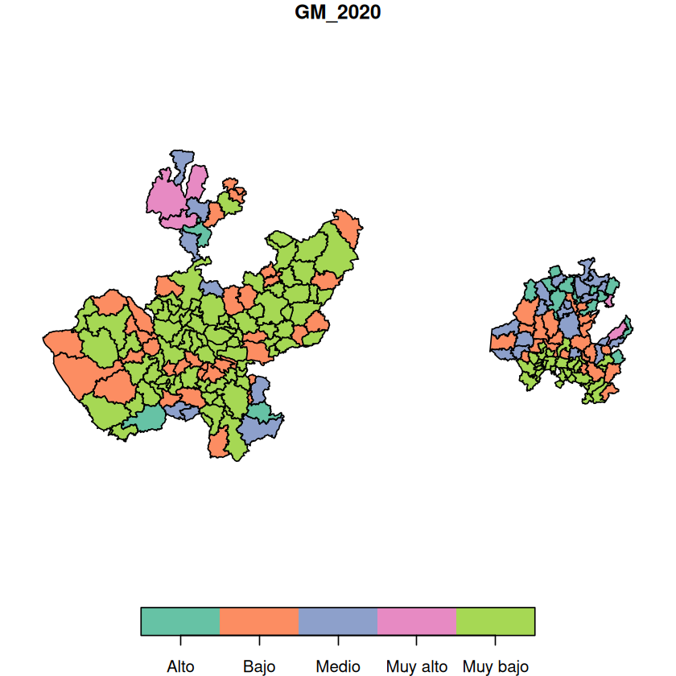

![]()
# Install the package if you haven't already
# install.packages("sf")
# install.packages("sf", dependencies = TRUE) Introduccion manejo de Datos Geoespaciales con R
Abstract
En este NoteBook encontraras codigo para manejar Datos Geoespaciales con R
Keywords
R, GeoEspacial
# Load the library
library(sp)
library(sf)
library(readxl)Linking to GEOS 3.12.1, GDAL 3.8.4, PROJ 9.4.0; sf_use_s2() is TRUE
https://klaothongchan.medium.com/getting-r-into-vscode-5d1c8bf7f745
municipi<-read_sf("../mg_2025_integrado/conjunto_de_datos/00mun.shp")install.packages("geojsonio")Installing package into ‘/home/leag555/R/x86_64-pc-linux-gnu-library/4.5’
(as ‘lib’ is unspecified)
also installing the dependencies ‘protolite’, ‘geojson’, ‘jqr’
Warning message in install.packages("geojsonio"):
“installation of package ‘protolite’ had non-zero exit status”
Warning message in install.packages("geojsonio"):
“installation of package ‘jqr’ had non-zero exit status”
Warning message in install.packages("geojsonio"):
“installation of package ‘geojson’ had non-zero exit status”
Warning message in install.packages("geojsonio"):
“installation of package ‘geojsonio’ had non-zero exit status”municipi$geometryMULTIPOLYGON (((2488980 1117358, 2489013 111666...
MULTIPOLYGON (((2453327 1143576, 2453363 114357...
MULTIPOLYGON (((2483638 1120034, 2483946 111990...
MULTIPOLYGON (((2481826 1149055, 2481589 114814...
MULTIPOLYGON (((2476760 1150329, 2476784 115031...
ERROR while rich displaying an object: Error in loadNamespace(x): no hay paquete llamado ‘geojsonio’
Traceback:
1. sapply(x, f, simplify = simplify)
2. lapply(X = X, FUN = FUN, ...)
3. FUN(X[[i]], ...)
4. tryCatch(withCallingHandlers({
. if (!mime %in% names(repr::mime2repr))
. stop("No repr_* for mimetype ", mime, " in repr::mime2repr")
. rpr <- repr::mime2repr[[mime]](obj)
. if (is.null(rpr))
. return(NULL)
. prepare_content(is.raw(rpr), rpr)
. }, error = error_handler), error = outer_handler)
5. tryCatchList(expr, classes, parentenv, handlers)
6. tryCatchOne(expr, names, parentenv, handlers[[1L]])
7. doTryCatch(return(expr), name, parentenv, handler)
8. withCallingHandlers({
. if (!mime %in% names(repr::mime2repr))
. stop("No repr_* for mimetype ", mime, " in repr::mime2repr")
. rpr <- repr::mime2repr[[mime]](obj)
. if (is.null(rpr))
. return(NULL)
. prepare_content(is.raw(rpr), rpr)
. }, error = error_handler)
9. repr::mime2repr[[mime]](obj)
10. repr_geojson.sfc(obj)
11. repr_geojson(geojsonio::geojson_list(obj), ...)
12. loadNamespace(x)
13. withRestarts(stop(cond), retry_loadNamespace = function() NULL)
14. withOneRestart(expr, restarts[[1L]])
15. doWithOneRestart(return(expr), restart)Geometry set for 2478 features
Geometry type: MULTIPOLYGON
Dimension: XY
Bounding box: xmin: 911292 ymin: 319149.1 xmax: 4083063 ymax: 2349615
Projected CRS: MEXICO_ITRF_2008_LCC
First 5 geometries:municipi[1:3,]ERROR while rich displaying an object: Error in loadNamespace(x): no hay paquete llamado ‘geojsonio’
Traceback:
1. sapply(x, f, simplify = simplify)
2. lapply(X = X, FUN = FUN, ...)
3. FUN(X[[i]], ...)
4. tryCatch(withCallingHandlers({
. if (!mime %in% names(repr::mime2repr))
. stop("No repr_* for mimetype ", mime, " in repr::mime2repr")
. rpr <- repr::mime2repr[[mime]](obj)
. if (is.null(rpr))
. return(NULL)
. prepare_content(is.raw(rpr), rpr)
. }, error = error_handler), error = outer_handler)
5. tryCatchList(expr, classes, parentenv, handlers)
6. tryCatchOne(expr, names, parentenv, handlers[[1L]])
7. doTryCatch(return(expr), name, parentenv, handler)
8. withCallingHandlers({
. if (!mime %in% names(repr::mime2repr))
. stop("No repr_* for mimetype ", mime, " in repr::mime2repr")
. rpr <- repr::mime2repr[[mime]](obj)
. if (is.null(rpr))
. return(NULL)
. prepare_content(is.raw(rpr), rpr)
. }, error = error_handler)
9. repr::mime2repr[[mime]](obj)
10. repr_geojson.sf(obj)
11. repr_geojson(geojsonio::geojson_list(obj), ...)
12. loadNamespace(x)
13. withRestarts(stop(cond), retry_loadNamespace = function() NULL)
14. withOneRestart(expr, restarts[[1L]])
15. doWithOneRestart(return(expr), restart)| CVEGEO | CVE_ENT | CVE_MUN | NOMGEO | geometry |
|---|---|---|---|---|
| <chr> | <chr> | <chr> | <chr> | <MULTIPOLYGON [m]> |
| 01001 | 01 | 001 | Aguascalientes | MULTIPOLYGON (((2488980 111... |
| 01008 | 01 | 008 | San José de Gracia | MULTIPOLYGON (((2453327 114... |
| 01011 | 01 | 011 | San Francisco de los Romo | MULTIPOLYGON (((2483638 112... |
plot(municipi$CVEGEO)
plot(municipi["CVEGEO"])
plot(municipi$geometry)
Jal_hid<-municipi[municipi$CVE_ENT%in%c(13,14),"CVEGEO"]plot(Jal_hid)
plot(st_geometry(municipi))
imm<-read_excel("IMM_2020.xlsx",sheet = "IMM_2020")summary(imm) CVE_ENT NOM_ENT CVE_MUN NOM_MUN
Length:2469 Length:2469 Length:2469 Length:2469
Class :character Class :character Class :character Class :character
Mode :character Mode :character Mode :character Mode :character
POB_TOT ANALF SBASC OVSDE
Min. : 81 Min. : 0.3534 Min. : 5.535 Min. : 0.0000
1st Qu.: 4489 1st Qu.: 4.4278 1st Qu.:35.738 1st Qu.: 0.6519
Median : 13552 Median : 8.2028 Median :46.339 Median : 1.4283
Mean : 51038 Mean :10.1645 Mean :45.853 Mean : 3.1600
3rd Qu.: 35284 3rd Qu.:13.7873 3rd Qu.:55.856 3rd Qu.: 3.3426
Max. :1922523 Max. :53.0713 Max. :88.328 Max. :64.4504
OVSEE OVSAE OVPT VHAC
Min. : 0.0000 Min. : 0.0000 Min. : 0.000 Min. : 3.95
1st Qu.: 0.3661 1st Qu.: 0.8785 1st Qu.: 1.655 1st Qu.:18.73
Median : 0.8282 Median : 2.4523 Median : 4.714 Median :25.00
Mean : 1.5008 Mean : 6.1181 Mean : 7.987 Mean :26.57
3rd Qu.: 1.6783 3rd Qu.: 7.2859 3rd Qu.:11.030 3rd Qu.:32.82
Max. :53.0655 Max. :81.7884 Max. :68.150 Max. :69.56
PL.5000 PO2SM IM_2020 GM_2020
Min. : 0.00 Min. : 28.45 Min. :21.41 Length:2469
1st Qu.: 40.13 1st Qu.: 74.62 1st Qu.:51.84 Class :character
Median :100.00 Median : 84.64 Median :54.42 Mode :character
Mean : 69.90 Mean : 82.14 Mean :53.96
3rd Qu.:100.00 3rd Qu.: 91.62 3rd Qu.:56.70
Max. :100.00 Max. :100.00 Max. :62.40
IMN_2020
Min. :0.3352
1st Qu.:0.8118
Median :0.8522
Mean :0.8449
3rd Qu.:0.8878
Max. :0.9771 mun <- sp::merge(municipi,imm,by.x ="CVEGEO",by.y = "CVE_MUN")summary(mun) CVEGEO CVE_ENT.x CVE_MUN NOMGEO
Length:2469 Length:2469 Length:2469 Length:2469
Class :character Class :character Class :character Class :character
Mode :character Mode :character Mode :character Mode :character
CVE_ENT.y NOM_ENT NOM_MUN POB_TOT
Length:2469 Length:2469 Length:2469 Min. : 81
Class :character Class :character Class :character 1st Qu.: 4489
Mode :character Mode :character Mode :character Median : 13552
Mean : 51038
3rd Qu.: 35284
Max. :1922523
ANALF SBASC OVSDE OVSEE
Min. : 0.3534 Min. : 5.535 Min. : 0.0000 Min. : 0.0000
1st Qu.: 4.4278 1st Qu.:35.738 1st Qu.: 0.6519 1st Qu.: 0.3661
Median : 8.2028 Median :46.339 Median : 1.4283 Median : 0.8282
Mean :10.1645 Mean :45.853 Mean : 3.1600 Mean : 1.5008
3rd Qu.:13.7873 3rd Qu.:55.856 3rd Qu.: 3.3426 3rd Qu.: 1.6783
Max. :53.0713 Max. :88.328 Max. :64.4504 Max. :53.0655
OVSAE OVPT VHAC PL.5000
Min. : 0.0000 Min. : 0.000 Min. : 3.95 Min. : 0.00
1st Qu.: 0.8785 1st Qu.: 1.655 1st Qu.:18.73 1st Qu.: 40.13
Median : 2.4523 Median : 4.714 Median :25.00 Median :100.00
Mean : 6.1181 Mean : 7.987 Mean :26.57 Mean : 69.90
3rd Qu.: 7.2859 3rd Qu.:11.030 3rd Qu.:32.82 3rd Qu.:100.00
Max. :81.7884 Max. :68.150 Max. :69.56 Max. :100.00
PO2SM IM_2020 GM_2020 IMN_2020
Min. : 28.45 Min. :21.41 Length:2469 Min. :0.3352
1st Qu.: 74.62 1st Qu.:51.84 Class :character 1st Qu.:0.8118
Median : 84.64 Median :54.42 Mode :character Median :0.8522
Mean : 82.14 Mean :53.96 Mean :0.8449
3rd Qu.: 91.62 3rd Qu.:56.70 3rd Qu.:0.8878
Max. :100.00 Max. :62.40 Max. :0.9771
geometry
MULTIPOLYGON :2469
epsg:NA : 0
+proj=lcc ...: 0
Jal_hid_2<-mun[mun$CVE_ENT.x%in%c(13,14),]plot(Jal_hid_2["GM_2020"])
Reuse
Citation
BibTeX citation:
@online{e._ascencio_g.,
author = {E. Ascencio G., Luis},
title = {Introduccion Manejo de {Datos} {Geoespaciales} Con {R}},
volume = {1},
number = {1},
doi = {000000/00000000},
langid = {en},
abstract = {En este NoteBook encontraras codigo para manejar Datos
Geoespaciales con R}
}
For attribution, please cite this work as:
E. Ascencio G., Luis. n.d. “Introduccion Manejo de Datos
Geoespaciales Con R.” CIMAT. https://doi.org/000000/00000000.